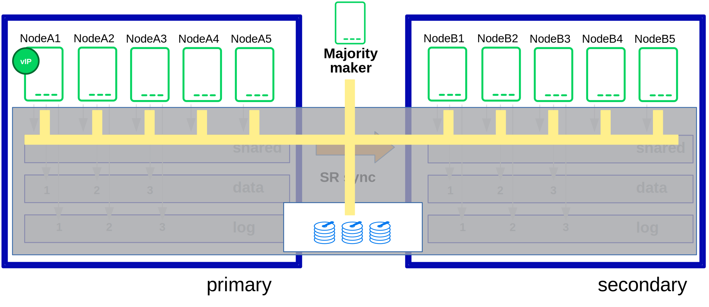

Planning the installation is essential for a successful SAP HANA cluster setup.

What you need before you start:
Software from SUSE: SUSE Linux Enterprise Server for SAP Applications installation media and a valid subscription for getting updates
Software from SAP: SAP HANA installation media
Physical or virtual systems including disks and NFS storage pools (see below)
Filled parameter sheet (see below)
This section defines some minimum requirements to install SAP HANA scale-out.
Note
The minimum lab requirements mentioned here are no SAP sizing information. These data are provided only to rebuild the described cluster in a lab for test purposes. Even for such tests the requirements can increase depending on your test scenario. For productive systems ask your hardware vendor or use the official SAP sizing tools and services.
Note
Refer to SAP HANA TDI documentation for allowed storage configuration and file systems.
Requirements with 3 SAP instances per site (2+1 : 2+1) - with a majority maker:
6 VMs with each 32 GB RAM, 50 GB disk space
1 VM with 2 GB RAM, 50 GB disk space
1 shared disk for SBD with 10 MB disk space
2 NFS pools (one per site) with a capacity of each 96 GB
1 additional IP address for takeover
Requirements with 5 SAP HANA instances per site (3+2 : 3+2) - with a majority maker:
10 VMs with each 32 GB RAM, 50 GB disk space
1 VM with 2 GB RAM, 50 GB disk space
1 shared disk for SBD with 10 MB disk space
2 NFS pools (one per site) with a capacity of each 132 GB
1 additional IP address for takeover
The SBD based fencing needs up to 3 shared block devices.
Figure 6. Additionally to the NFS shares: All cluster nodes need to have access to the SBD block devices
|  |
The cluster organizing two SAP HANA 'swarms' is quite complex. The installation should be planned properly. You should have all needed parameters like SID, IP addresses and much more already in place. It is a good practice to first fill out the parameter sheet and then begin with the installation.
Table 1. Parameter sheet to prepare the NFS based setup
| Parameter | Value |
|---|---|
Path to SLES for SAP media | |
SMT server or SCC account | |
Path to SAP HANA media | |
S-User for SAP marketplace | |
Node names site 1 | |
Node names site 2 | |
Node name majority maker | |
IP addresses of all cluster nodes | |
SID | |
Instance number | |
Service IP address | |
HANA site name site 1 | |
HANA site name site 2 | |
NFS server site 1 | |
NFS share "shared" site 1 | |
NFS share "data" site 1 | |
NFS share "log" site 1 | |
NFS server site 2 | |
NFS share "shared" site 2 | |
NFS share "data" site 2 | |
NFS share "log" site 2 | |
SBD STONITH block device(s) | |
Watchdog driver |
To automate the failover, the High Availability Extension built into SUSE Linux Enterprise Server for SAP Applications is used. Two resource agents have been created to handle the scenario.
The first is the SAPHanaController resource agent (RA), which checks and manages the SAP HANA database instances. This RA is configured as a master/slave resource.
The master assumes responsibility for the active master name server of the SAP HANA database running in primary mode. All other instances are represented by the slave mode.
The second resource agent is SAPHanaTopology. This RA has been created to make configuring the cluster as simple as possible. It runs on all nodes (beside the majority maker) of a SUSE Linux Enterprise High Availability Extension 12 cluster. It gathers information about the statuses and configurations of the SAP HANA system replication. It is designed as a normal (stateless) clone resource.
SAP HANA system replication for scale-out is supported in the following scenarios or use cases:
- Performance optimized, single container (A > B)
This scenario and setup is described in this document. In the performance optimized scenario an SAP HANA RDBMS on site "A" is synchronizing with an SAP HANA RDBMS on a second site "B". As the SAP HANA RDBMS on the second site is configured to preload the tables the takeover time is typically very short.
- Performance optimized, multi-tenancy also named MDC (%A > %B)
Multi-tenancy is supported for all of the above scenarios and use cases. This scenario is supported since SAP HANA 1 SPS12. The setup and configuration from a cluster point of view is the same for multi-tenancy and single containers. Thus you can use the above documents for both types of scenarios.
Multi-tenancy is the default installation type for SAP HANA 2.0.
In case of failure of the primary SAP HANA on site 1 the cluster first tries to start the takeover process. This allows to use the already loaded data at the secondary site. Typically the takeover is much faster than the local restart.
A site is noticed as "down" or "on error", if the LandscapeHostConfiguration status reflects this (return code 1). This happens when worker nodes are going down without any SAP HANA standby nodes left. Standby nodes are designed to perform a host auto-failover for the worker functionality.
Without any additional intervention the resource agent will wait for the SAP internal HA cluster to repair the situation locally. An additional intervention could be a custom python hook using the SAP provider srServiceStateChanged() available since SAP HANA 2.0 SPS01.
To achieve an automation of this resource handling process, use the SAP HANA resource agents included in the SAPHanaSR-ScaleOut RPM package delivered with SUSE Linux Enterprise Server for SAP Applications.
You can configure the level of automation by setting the parameter AUTOMATED_REGISTER. If automated registration is activated the cluster will also automatically register a former failed primary to get the new secondary.
Read the SAP Notes and papers first.
The SAPHanaSR-ScaleOut resource agent software package supports scale-out (multiple-box to multiple-box) system replication with the following configurations and parameters:
The cluster must include a valid STONITH method.
As the STONITH mechanism SBD is recommended.
Both sites are either in the same network segment (layer 2) to allow an easy takeover of an IP Address, or you need a technique like overlay IP addresses in virtual private clouds.
Technical users and groups, such as <sid>adm are defined locally in the Linux system.
Name resolution of the cluster nodes and the virtual IP address should be done locally on all cluster nodes to not depend on DNS services (as it can fail, too).
Time synchronization between the cluster nodes using reliable time services like NTP.
Both SAP HANA sites have the same SAP Identifier (SID) and instance number.
The SAP HANA scale-out system must have only one active master name server per site. It should have up to three master name server candidates (SAP HANA nodes with a configured role 'master<N>').
The SAP HANA scale-out system must have only one failover group.
The cluster described in this document does not manage any service IP address for a read-enabled secondary site.
There is only one SAP HANA system replication like from site "A" to site "B" but no third site "C" (also called multi-tier or multi-target).
The setup implements the performance optimized scenario but not the cost optimized scenario.
The saphostagent must be running. saphostagent is needed to translate between the system node names and SAP host names used during the installation of SAP HANA.
The replication mode should be either 'sync' or 'syncmem'.
All SAP HANA instances controlled by the cluster must not be activated via sapinit autostart.
Important
Automated registration of a failed primary after takeover is possible. But as a
good starting configuration for projects, it is recommended to switch off the
automated registration of a failed primary, therefore the
AUTOMATED_REGISTER="false" is the default.
In this case, you need to register a failed primary after a takeover manually. Use SAP tools like SAP HANA Cockpit or hdbnsutil.
Automated start of SAP HANA instances during system boot must be switched off.
You need at least SAPHanaSR-ScaleOut version 0.161, SUSE Linux Enterprise Server for SAP Applications 12 SP2 and SAP HANA 1.0 SPS12 (121) or SAP HANA 2.0 SPS 2 for all mentioned setups.
Important
You must implement a valid STONITH method. Without a valid STONITH method, the complete cluster is unsupported and will not work properly.
This setup-guide focuses on the performance optimized setup as it is the only supported scenario at the point of writing this guide.
If you need to implement a different scenario, it is strongly recommended to define a Proof-of-Concept (PoC) with SUSE. This PoC will focus on testing the existing solution in your scenario. The limitation of most of the above items is mostly due to testing limits.